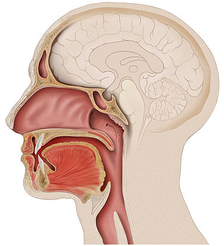

La boca es la abertura a través de la cual muchos animales ingieren alimentos y emiten sonidos vocales. Es también la cavidad que se encuentra en el extremo superior del canal alimentario, delimitada por fuera por los labios y por dentro por la faringe y que contiene en los vertebrados superiores la lengua y los dientes.
